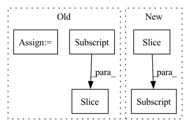

Pattern ID :4946
Before Change
for x in annotations["sentences"]:
for y in x["entitymentions"]:
token_length = len(y["text"].split(" "))
if y["ner"] == "DATE":
dates.append(y["text"])
index = len(all_text[:y["characterOffsetEnd"] ].split(" "))
if token_length < 2:
indices.append([index - 1])
else:After Change
token_length = len(text.split(" "))
idx = all_text.find(match[0])
text_len = len(text)
index = len(all_text[:idx] .strip().split(" "))
replaced_text = " ".join(["*"*len(i) for i in text.split(" ")])
In pattern: SUPERPATTERN
Frequency: 3
Non-data size: 5
Instances Fragment ID: 17384530
Project Name: praneet9/representation-learning-for-information-extraction
Commit Name: e369e0fb493febe1b1a3ad69bcef2218109d1134
Time: 2021-02-21
Author: praneetbomma@gmail.com
File Name: utils/extract_candidates.py
M Class Name: AnonimousClass
N Class Name: AnonimousClass
M Method Name: get_dates(2)
N Method Name: get_dates(2)
M Parent Class:
N Parent Class:
M File Name: utils/extract_candidates.py
N File Name: utils/extract_candidates.py
M Start Line: 28
M End Line: 45
N Start Line: 29
N End Line: 46
Before Change
hop = int(window_size * stride)
slices = []
for end_idx in range(window_size, len(wav), hop):
start_idx = end_idx - window_size
slice_sig = wav[start_idx:end_idx ]
slices.append(slice_sig)
return slices
After Change
wav = np.pad(wav, (0, padding_len), "constant")
slices = []
for start_idx in range(0, len(wav)-window_size+1, hop):
slice_sig = wav[start_idx:start_idx+window_size]
slices.append(slice_sig)
return slices
Fragment ID: 17384533
Project Name: nitin4525/speechenhancement
Commit Name: 2168d0c13d56b0e93d29fef666a8f7886bca04c8
Time: 2021-04-28
Author: 51083614+Nitin4525@users.noreply.github.com
File Name: data_preprocess.py
M Class Name: AnonimousClass
N Class Name: AnonimousClass
M Method Name: slice_signal(4)
N Method Name: slice_signal(4)
M Parent Class:
N Parent Class:
M File Name: data_preprocess.py
N File Name: data_preprocess.py
M Start Line: 11
M End Line: 25
N Start Line: 10
N End Line: 20
Before Change
padding_len = window_size - len(wav) % window_size
wav = np.pad(wav, (0, padding_len+1), "constant")
slices = []
for end_idx in range(window_size, len(wav), hop):
start_idx = end_idx - window_size
slice_sig = wav[start_idx:end_idx ]
slices.append(slice_sig)
return slices
After Change
wav = np.pad(wav, (0, padding_len), "constant")
slices = []
for start_idx in range(0, len(wav)-window_size+1, hop):
slice_sig = wav[start_idx:start_idx+window_size]
slices.append(slice_sig)
return slices, src_length
Fragment ID: 17384532
Project Name: nitin4525/speechenhancement
Commit Name: 2168d0c13d56b0e93d29fef666a8f7886bca04c8
Time: 2021-04-28
Author: 51083614+Nitin4525@users.noreply.github.com
File Name: test.py
M Class Name: AnonimousClass
N Class Name: AnonimousClass
M Method Name: slice_signal(4)
N Method Name: slice_signal(4)
M Parent Class:
N Parent Class:
M File Name: test.py
N File Name: test.py
M Start Line: 21
M End Line: 30
N Start Line: 21
N End Line: 29